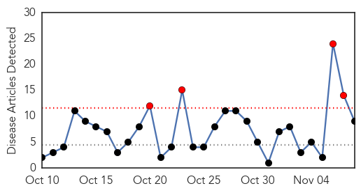
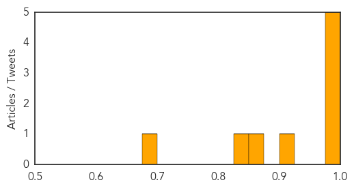

Cholera
30-Day Web Trend
4 alerts, 0 warnings

30-Day Twitter Trend
6 alerts, 0 warnings

Article Locations
Article Confidences
Top Articles:
- 0.998
- Omani woman tests positive for cholera after visiting Iraq
- 0.995
- Kuwait- Health Ministry denies rumors on cholera outbreak
- 0.995
- UN Fights Cholera Outbreak in Iraq
- 0.994
- amid fears of cholera outbreak, UN steps up support
- 0.994
- Bahrain, Kuwait confirm recovery of cholera victims
- 0.907
- Cholera reported in the Sultanate
- 0.862
- Cholera outbreak in Iraq spreads to neighboring countries: UNICEF
- 0.846
- Ministry advises caution after cholera case detected
- 0.683
- OFFICIAL CORRECTION-INTERVIEW-Cholera spreads from Iraq to Syria, Kuwait, Bahrain -UNICEFHealthcare
Top Tweets:
-
No tweets found for Nov 08, 2015
Hepatitis
30-Day Web Trend
0 alerts, 0 warnings
30-Day Twitter Trend
0 alerts, 0 warnings

Article Locations
Article Confidences

Top Articles:
Top Tweets:
-
No tweets found for Nov 08, 2015